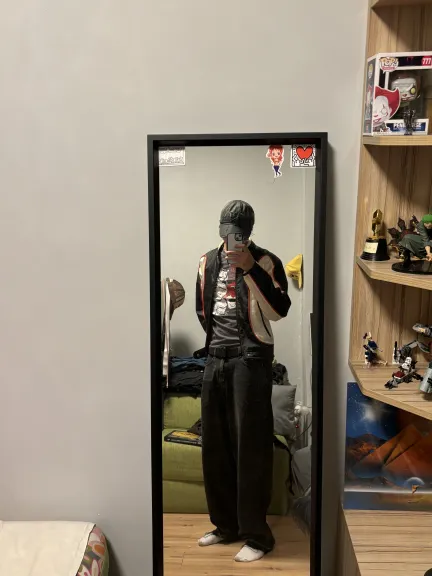
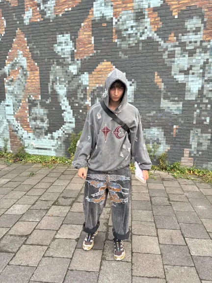

Aleksandar Metodiev
This is my profile page :) Here you get a quick overview of what type of person I look like at first site. I am joyfull and supporting. Quick to make friends. Fashion Icon.
In my free time I enjoy going to the gym both alone and with friends. Also back in Bulgaria I went on a lot of hikes and mountain trails. Alwfull luck around here I guess. When I am not out or in the fitness I like playing games and reading books. The reading books part is why I'm here as you can guess. I enjoy riding a bike and have done so for many years. I quite like the 30 or so minuetes bike ride to uni from Vlissingen. (Where I'm situated)
- Sports
- Bike riding
- Gaming
- Outdoors
- Reading